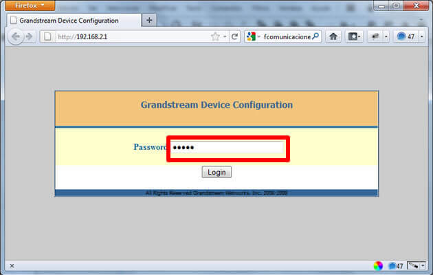
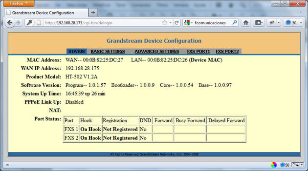
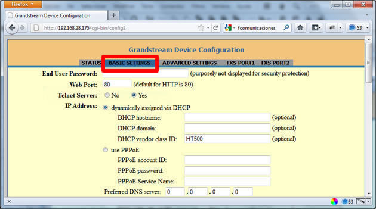
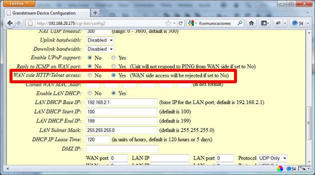

1. Conectamos un cable del puerto WAN al router o Internet.
2. Conectamos el otro puerto que dice LAN hacia al equipo.
Cuando conectemos el Grandstream abrimos nuestro navegador, y en el browser colocamos la siguiente IP:
192.168.2.1

En el campo Password: ingresamos la palabra admin

Ahora Ingresamos a la pestaña Basic Settings que se encuentra en la parte superior.

Ahora nos desplazamos en la parte que dice Wan side HTTP/Telnet access: le damos la opción Yes

Nos dirigimos ahora a la pestaña FXS PORT1